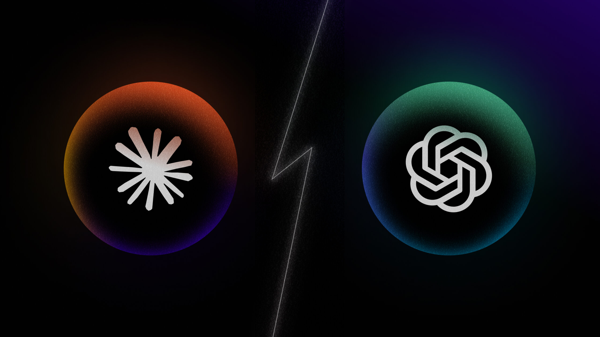

LLMs Are Bad at Asking Questions
Recently, I came across this Reddit post. The original post began with:
When someone asks you something, the smartest response is often to ask clarifying questions. Brilliant minds are good at finding good sequences of questions that lead to clarity, mutual understanding, and identification of the unknowns, ambiguities, and cruxes.
To me it seems like LLMs are currently bad at asking questions. You ask them something, and they give a lengthy response, and then a follow up question asking if you want them to answer/do something else.
This is an issue with LLMs that I’ve been thinking about as well recently, especially as I use LLMs in domains that are completely new to me (e.g. software development) – in which the LLM failing to ask clarifying questions has resulted in consequences like overcomplicating the problem and solution (which I talked about in the previous post “Vibe Coding: Part 2”). In this blog, I’ll document my experience and thoughts regarding this flaw of LLMs.
Application to programming
This flaw – not asking effective questions – has become most apparent in my interactions with LLMs when I’m using them to help program.
I even came across a comment under the original Reddit post that reminded me of this and really resonated with me: > I mean when you use the ones that are actually meant for programming, like the ones that are agents built into the IDE such as Codex…. They WILL often be like “before i can proceed, i need you to answer these 3 questions”, or whatever. And then you realize that you either forgot to mention some stuff, or that there is additional complexity you weren’t aware of when writing your original prompt.
I’ve come across this same thing in my own experience when using Claude compared to ChatGPT. Claude isn’t naturally built into an IDE, but it’s much more popular among developers and exhibits this same trait that the commenter was talking about. On the other hand, I’ve found that ChatGPT, which is less suited for programming, does not exhibit this trait.

For example, when using Sonnet 4.5 to help me debug a program, it would often say things like: > Can you verify the home page isn’t truncated? Check the file size or line count.
Could you tell me your folder structure? Is [filename] inside the (tabs) folder?
Also, a couple of quick debugging questions: When you click on a post from the profile page, does the post detail page load correctly? What navigation library are you using? (It looks like expo-router based on the imports)
These questions were actually incredibly useful, since they were questions that I forgot needed answers in order for the LLM to productively help me. However, when using GPT-5.1 to help me debug these same programs, it would never produce these questions. Instead, it would end each debugging answer with things like: > If you want, paste your full [filename] and I’ll rewrite it 100% correctly for you.
If you paste a snippet here, I can help you interpret any specific errors it reports.
While these requests to paste the entire program could definitely help with debugging, they still aren’t questions.
The problem
To illustrate this problem, I gave both Sonnet 4.5 and GPT-5.1 the prompt: > help me develop a craft app
This was an intentionally vague request that needs questions in order to produce something that aligns with my goal.
ChatGPT’s response was long, so here’s a few snippets:
ChatGPT’s response:
Nice, let’s make a craft app 🧶✂️
Since you didn’t pin down details, I’ll give you:
- A clear concept + features
- A simple screen flow & data model
- A starter React Native/Expo skeleton you can actually build on
(If you want a different stack later—web, Swift, etc.—we can port it.)
6. Starter React Native / Expo code
This is an MVP skeleton that compiles and gives you real screens to extend.
6.2 Sample data
src/data/projects.ts:
export type Difficulty = 'easy' | 'medium' | 'hard';
export interface Material {
id: string;
name: string;
quantity?: string;
}
export interface Step {
id: string;
order: number;
text: string;
imageUrl?: string;
}
export interface Project {
id: string;
title: string;
category: string;
difficulty: Difficulty;
estimatedTimeMinutes: number;
heroImageUrl: string;
shortDescription: string;
materials: Material[];
steps: Step[];
}
export const PROJECTS: Project[] = [
{
id: 'paper-flowers-1',
title: 'Paper Flower Garland',
category: 'paper',
difficulty: 'easy',
estimatedTimeMinutes: 45,
heroImageUrl: 'https://placehold.co/600x400?text=Paper+Flowers',
shortDescription: 'Create a colorful garland using simple paper flowers.',
materials: [
{ id: 'm1', name: 'Colored paper', quantity: '10 sheets' },
{ id: 'm2', name: 'Scissors' },
{ id: 'm3', name: 'String', quantity: '2 meters' },
{ id: 'm4', name: 'Glue' },
],
steps: [
{ id: 's1', order: 1, text: 'Cut circles or flower shapes out of colored paper.' },
{ id: 's2', order: 2, text: 'Fold each flower slightly to add dimension.' },
{ id: 's3', order: 3, text: 'Glue flowers along the string, spacing them evenly.' },
{ id: 's4', order: 4, text: 'Let everything dry, then hang your garland!' },
],
},
];6.3 Home screen (list of projects)
src/screens/HomeScreen.tsx:
import React from 'react';
import { View, Text, FlatList, TouchableOpacity, Image, StyleSheet } from 'react-native';
import { NativeStackScreenProps } from '@react-navigation/native-stack';
import { RootStackParamList } from '../../App';
import { PROJECTS, Project } from '../data/projects';
type Props = NativeStackScreenProps<RootStackParamList, 'Tabs'>;
const HomeScreen: React.FC<Props> = ({ navigation }) => {
const renderItem = ({ item }: { item: Project }) => (
<TouchableOpacity
style={styles.card}
onPress={() => navigation.navigate('ProjectDetail', { projectId: item.id })}
>
<Image source={{ uri: item.heroImageUrl }} style={styles.image} />
<View style={styles.info}>
<Text style={styles.title}>{item.title}</Text>
<Text style={styles.meta}>
{item.category} · {item.difficulty} · {item.estimatedTimeMinutes} min
</Text>
<Text style={styles.description} numberOfLines={2}>
{item.shortDescription}
</Text>
</View>
</TouchableOpacity>
);
return (
<View style={styles.container}>
<FlatList
data={PROJECTS}
keyExtractor={(item) => item.id}
renderItem={renderItem}
contentContainerStyle={{ padding: 16 }}
/>
</View>
);
};
const styles = StyleSheet.create({
container: { flex: 1 },
card: {
backgroundColor: '#fff',
borderRadius: 12,
marginBottom: 16,
overflow: 'hidden',
elevation: 2,
},
image: { width: '100%', height: 160 },
info: { padding: 12 },
title: { fontSize: 18, fontWeight: '600', marginBottom: 4 },
meta: { fontSize: 12, color: '#666', marginBottom: 4 },
description: { fontSize: 14, color: '#444' },
});
export default HomeScreen;As you can see, ChatGPT dove straight into giving me code without asking any questions.
This was Claude’s entire response:
Claude’s response:
I’d be happy to help you develop a craft app! To create something that fits your vision, I’d love to know more about what you have in mind:
What type of crafts are you interested in? For example: - Knitting/crochet patterns and tracking - DIY/home crafts with tutorials - Origami instructions - Jewelry making - Paper crafts - Mixed crafts platform
Key features you’re envisioning? Such as: - Project galleries and inspiration - Step-by-step tutorials - Materials/supply tracking - Progress tracking for ongoing projects - Community features (sharing, comments) - Pattern libraries - Timer/counter tools
Who’s the target audience? Beginners, experienced crafters, kids, adults?
What platform are you thinking? Web app, mobile-focused, or both?
Once I understand your goals, I can build you a working prototype with actual functionality - whether that’s a simple project tracker, a tutorial viewer, a pattern library, or something more comprehensive. Let me know what would be most useful to you!
Comparison:
It was a stark contrast to ChatGPT – before diving into anything at all, it asked a set of thorough questions to help understand what I was looking for. I feel like the responses to this prompt exemplify the differences I’ve been experience between ChatGPT and Claude.
With ChatGPT, it often feels like I have to know what I don’t know, whereas with Claude, its more inquisitive and question-oriented behavior takes care of this.
Reflection
My biggest takeaway from this mini-experiment was re-affirming the importance of using different models to take advantage of each of their unique strengths. Previously, I felt like I had been relying on ChatGPT for all LLM tasks, including programming and code debugging. I was reluctant to use other models like Claude’s, since I already felt extremely comfortable with ChatGPT. However, Claude for these tasks now feels like night and day, and I don’t think I’ll be going back in the near future.
Because of this, I think it’s important to shift our view of LLMs and treat them more like a set of tools in a toolbox. Rather than relying on one model as a “companion,” we should be comfortable enough with a wide range of LLMs so that we can select the best one for the current task at hand. Previously, I had been treating ChatGPT as my “companion,” (or “co-intelligence,” as Mollick would put it), but after realizing the strengths of Claude that we discussed in this blog, I’m ready to treat LLMs more like tools in a toolbox.